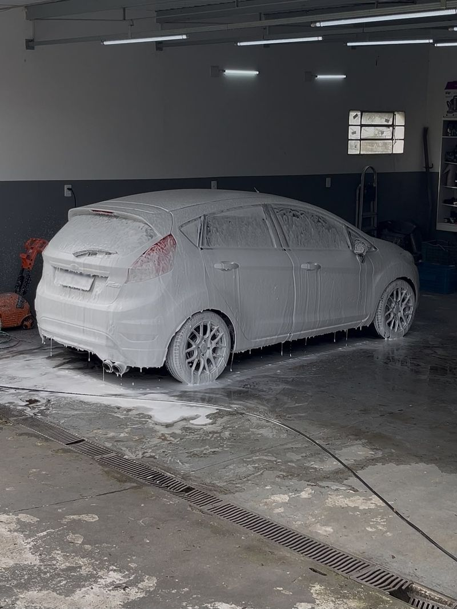

Lavagem Técnica
Limpeza detalhada por dentro e por fora, finalizada com nano selante na pintura.
O que está incluso
Um cuidado completo pensado para limpar, proteger e preservar a estética do veículo. O serviço inclui aspiração interna, limpeza dos plásticos, vidros e painel, seguida de pré-lavagem e lavagem detalhada. A finalização conta com a aplicação de nano selante na pintura, proporcionando proteção, brilho e efeito hidrorrepelente, juntamente com o selante dos pneus, realçando o acabamento e completando o cuidado externo do veículo.
a partir deR$ 150,00
Pedir orçamento